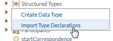
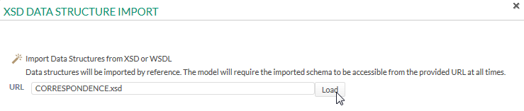
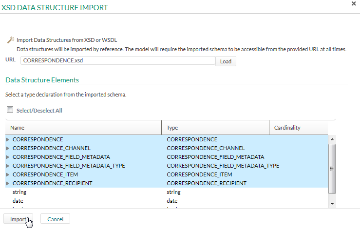
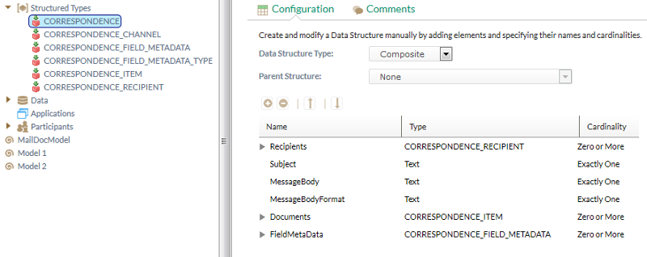
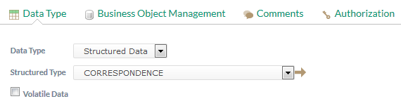
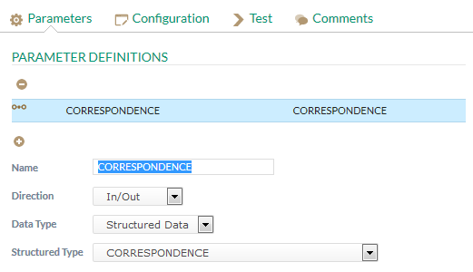
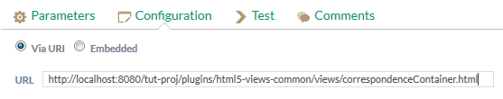

To prepare our workflow for correspondence, we have to import the predefined correspondence structured data type and create a UI Mashup application for Correspondence. The UI Mashup application is created in the same way for both example models.
Note that you require additional jar files to use the templating feature with substitution functionality in a Correspondence. Please refer to section Configuration of chapter Using Correspondence Templates for details.
The predefined CORRESPONDENCE.xsd file defines document request data
required for correspondence. You find it in the correspondence/dat folder of the
all-tutorials.zip file.
This data type will be used in a UI Mashup for creating correspondence. Add this XSD file
to the classpath of your Web project, e.g. to the ipp-resources folder in a RAD environment.
In our example model, we create a structured data type CORRESPONDENCE:



Now you can see the imported structured type in the model tree.

Figure: CORRESPONDENCE SDT Type
Now create a structure data CORRESPONDENCE of type CORRESPONDENCE.

Figure: Structured Data to be used as in- out-data for UI Mashup
To prepare a process to create correspondence, we need to set up a UI Mashup application. This UI Mashup application will be complimented with correspondence request data.
In the UI Mashup application, create a parameter with name CORRESPONDENCE with in and out direction and of structured data type CORRESPONDENCE. Note that it is important to name the parameter CORRESPONDENCE!

Figure: Correspondence UI Mashup Parameter
In the Configuration tab select Via URI and enter the following URL:
http://<hostname>:<portnumber>/<context-root>/plugins/html5-views-common/views/correspondenceContainer.html
For example:
http://localhost:8080/tut-proj/plugins/html5-views-common/views/correspondenceContainer.html

Figure: Example UI Mashup configuration URL
Add structured data CORRESPONDENCE as in- and out-data for the UI Mashup parameter.